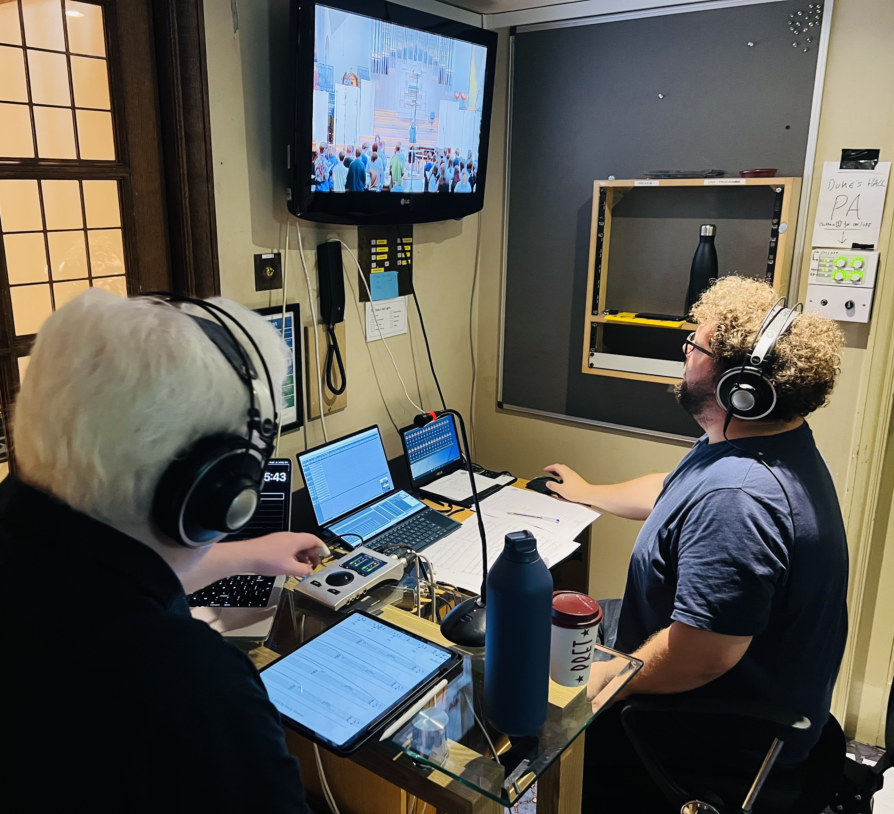
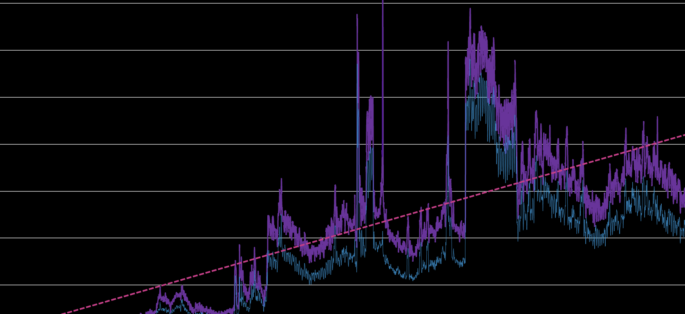
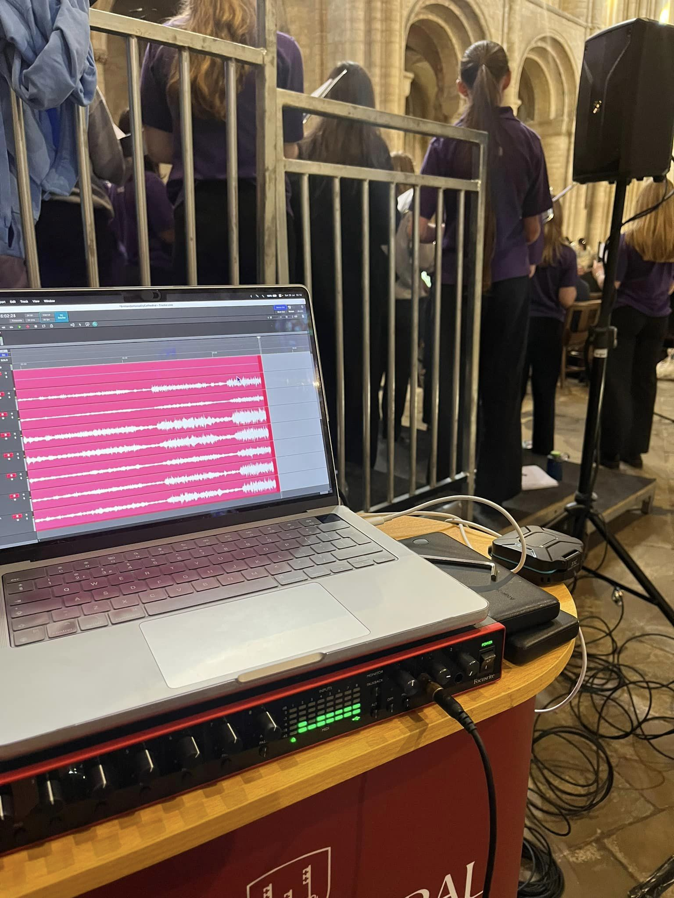

Producing

Josh has established himself as an experienced and respected producer, especially within choral music. With
dual training in both music and computing, he is not only well-versed in the demands of recording sessions
from the performer's perspective, but also familiar with the tools used and processes followed within the
control room.
The role of the producer, like the conductor, is that of a facilitator. Josh is deeply passionate about
enabling performers to achieve and surpass their potential, and sees producing very much in this light.
Should you decide to work with him on your recording, you can be sure that you'll receive "gregarious,
approachable and dedicated" (Ben Parry) support throughout the process.
Previous clients have included top choirs, orchestras and solo artists, and Josh's discography includes
dozens of releases on major labels.
Label Management & Consulting

Having worked with some of the world's best distributors and aggregators, Josh has collated a wealth of
knowledge about the best practises for operating a successful record label. Some of the labels that Josh has
worked with continue to represent artists that receive upwards of 150k listens each month on Spotify alone,
with their overall roster exceeding well over 5m Spotify listens on a monthly basis.
With a deep knowledge of the release lifecycle right from conception through to release, and a love for
crafting well-oiled and efficient processes, Josh can help you to achieve your goals, whether you are just
starting a new venture or wanting to take an existing one to the next level.
Whatever stage your label is at, Josh is available to answer all of your questions.
Engineering & Post-Production
Josh has also amassed a wealth of experience as a sound recordist, particularly in the recording of live
performances. He is able to capture ensembles of all sizes on location, with previous projects including
recordings of small 4-8 person chamber ensembles, large choir with orchestra, and massed singers at the
Royal Albert Hall. Regardless of the size, he prides himself on his attention to detail and the quality
of the final product, so you can be sure that your project is in safe hands.
As standard, Josh's location recording rig is capable of capturing up to 32 channels of high resolution
(24bit 96kHz) audio, which is sufficient for most recording sessions or live events. With an inventory of
microphones from top manufacturers including Schoeps, Beyerdynamic, AKG, Blue and RØDE, and knowledge of
optimal micing positions, you can be sure that the masters produced will be only of the very highest
quality.